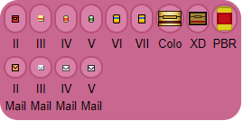
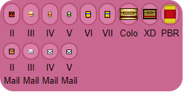

Held Items
Sometimes, a Pokemon needs a little extra boost in order to be really good in battle. That's what held items are for. A good held item can change a Pokemon from being just mediocre, to really strong. Their effects range from HP regeneration, to making a Pokemon stronger, to damaging the opponent. Some items can only be used once in battle, such as berries and the Focus Sash. Other items boost the power of a Pokemon's moves, but usually at a cost. In any case, held items are a huge part of competitive Pokemon, and competitive play would be a lot different without them.
At first there weren't very many held items for people to choose from. But now, there are hundreds of items for players to choose from to give their Pokemon a little extra edge in battle. Some held items are great, some are only useful in specific situations, and some are completely useless.
 
